ELEGA （エレガ ）
藤木電器が製造していたヘッドフォン・ブランド。現在の藤木電器はどのような状態であるかは不明だが、一部機種の改良版がエレガアコスに引き継がれている。
日本のヘッドフォンの歴史の中で果たした役割は極めて大きく、業務用で広く使われたDR-531Cは1950年代に完成していた。またDR-196Cは、サマリュウム・コバルト磁石を採用した厚さ25ミクロンのマイラー振動板とアルミボイスコイルを持つ機体であり、現代的なヘッドフォンの先駆け的な製品である。
放送局等での業務用機種で有名で、一部では市販されたことがないとするサイトさえあるが、こうしたイメージは後から結果として業務用機器が残った為できたものである。1950年代末から80年代半ばまでは、鑑賞用のモデルも生産していたし、むしろ機種数では圧倒的に一般向けのモデルの方が多い。また1961年頃の広告を見ると小口径のスピーカーを手広く扱っていた時期もあるようだ。
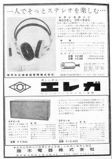 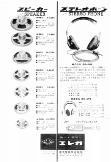
各社のOEMを広く請け負っていたため、積極的に自社製品を販売したわけではないかもしれないが、1970年代後半までは機種数・製品バリエーションで他社を圧倒する存在であり、管理人の知る限りでは、純コンデンサー型、エレクトレット・コンデンサー型、動電全面駆動型、２ウェイ型、すべて作ったメーカーは「エレガ」のみである。（＊）また1960年代（確認できたのは1966年）にすでにヘッドフォンアンプを発売していたのもこの会社である。
製品の型番は一般的なダイナミック型は「DR」、動電全面駆動型は「FR」、コンデンサー型は「CR」。型番末尾に「C」がつくモデルが多いが、ステレオ仕様のモデルの意味で、一部にはモノラル仕様の「A」や医療用など検聴用仕様の「B」がつくバリエーションを持つモデルがある（例 DR-631)。この伝統は1980年代に入ると、薄れていき、新製品ではつかなくなった。また1960年代までは数字が3桁のものが業務用、2桁のものは民生用というルールがあった。（エレガの型番についてはこちらを参照）
＊ダイナミック型の主流がコーン型の時代には、高音質タイプとしてコンデンサー型もしくは動電全面駆動型を用意したメーカも複数存在する。しかしコンデンサー型と動電全面駆動型の両方をラインナップしたのはアカイ、オーディオ・テクニカ、サトレックス、トリオ（現ケンウッド）ぐらいであり、アカイは成極電圧を別に供給する純コンデンサー型、残り3社のコンデンサー型はエレクトレット・コンデンサー型であった。
ELEGA （エレガ
）の製品を以下のように分類する。（この分類は個人的な意見で、メーカーの分類ではありません）
なおエレガの1960年以前の製品については資料が現時点では手元にほとんどない
�T.業務用・生録用の機種
戦後まもなく放送用として開発されたDR-531などのグループ。1953年頃ステレオ仕様のDR-531Cが登場している。スタックスを愛用していた故 高城重躬
(たかじょう・しげみ)氏も1970年代までは録音モニター用としてはエレガの放送用を使用していたとの記述がある。現在エレガアコスで製造されているDR-592C2の原型、DR-592Cは生録対応用として開発された。なお型番のみ判明しているこのジャンルらしき商品にDR-601C、DR-331がある。この二つは1960年頃の商品だが詳細は不明。
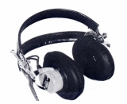
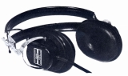
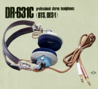
(左 DR-531C 中央 DR-592C 右 DR-631C)
�U.観賞用機種（オーディオ用のもの）
コンシュマー用の第1号機はDR-59。その型番は発売年の1959年に由来する。その後1960年代までは型番の数字が2桁のものが民生用、3桁のものがプロ用とのルールがあったそうだ。やがて100番台の製品が導入され、70年代後半には200番台の製品が登場する。そして末期には600番及び4桁の製品が登場する。
�@型番1、2桁の製品
(1)型番1桁の製品
エレガの型番が1桁の製品についてはほとんどわからない。管理人も実物を見たことがあるのは、中野の某店主催のイベントに持ち込まれたDR-1というモノラルタイプのみである。所有者である「今日も走るよ」の「スピードの素」さんが電話でエレガアコスにたずねたところ、1950年代の電話関係用の製品ではないかという話である。現時点で判明している当サイトの収録基準であるステレオ仕様のものはDR-6Cの1点のみ。この製品は1964年の「無線と実験」誌に広告が掲載された機種で、すでに型番2桁の製品が発売された後の製品のようである。
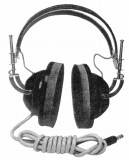
(2)型番2桁の製品
初の民生用モデルDR-59CはDR-531Cの簡略版。当時はKOSS（コス）のヘッドフォンを意識して開発していたそうだ。DR-65でエアクッションのイヤパッドを採用した。この当時の各モデルを見ると古いヘッドフォンのスタイルの原型がエレガで完成していたことがわかる。ちなみにDR-58は2�p径のマイラー振動板を採用した高性能イヤホーンだそうだ。また、これらの製品の時代には、アンプにヘッドフォン端子が無い場合があり、ヘッドホン・アンプの先駆けとなる製品もあった。
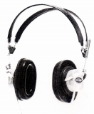
DR-60C DR-61C DR-62C DR-63C DR-65C DR-66C DR-68C
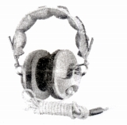 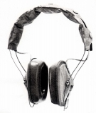 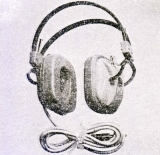
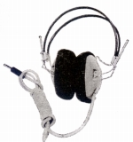 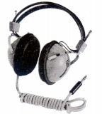
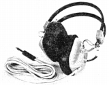
DR-90C DR-92C-�U DR-92C-V DR-95C DR-98C-�U
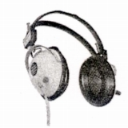
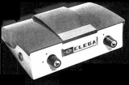
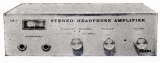
(左 RA-1 右 RA-3)
�A型番100番台の製品
1960年代後半から70年代中盤までの製品が型番100番台の製品で、このあたりからオープンエア型が登場する。パイオニアの成功をみて。デザインについて石鹸箱のようなものからの脱却を目指したそうだ。そして初めて希土系磁石を採用したヘッドフォン、DR-196Cが1974年にデビューする。
DR-104C DR-109C DR-110C DR-111C DR-122C DR-124C DR-136C DR-136C-�U
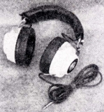
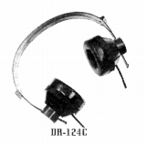
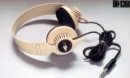
(左 DR-111C 中央 DR-124C 右 DR-136C)DR-140C DR-158C DR-159C DR-166C DR-175C DR-194C DR-196C
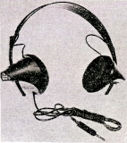
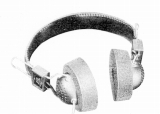
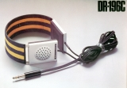
(左 DR-158C 中央 DR-175C 右 DR-196C)�B型番200番台の製品
1970年代後半には型番200番台の製品が登場するが、このあたりの製品は他社向OEMのベースモデルが多い。DR-196Cからの軽量機路線のモデルが続く。
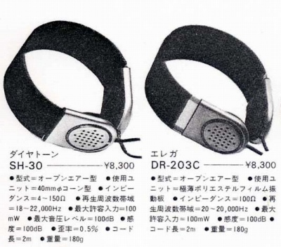
(ある資料でエレガとOEMモデルがとなりあわせになった例）
DR-203C DR-206C DR-209C DR-214CMK2 DR-215CMK3 DR-219C DR-233C DR-247C
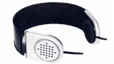
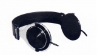
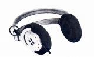
(左 DR-203C 中央 DR-206C 右 DR-247C)
�C型番600番以降の製品
1980年代に入りヘッドフォン全体の小型・軽量機ブームにエレガも無縁ではいられなかった。従来の、型番末尾に「C」をつける伝統もなくなった。DR-600はソニーのMDR-3と同じ23�o径ユニットを使用したモデル。DR-1000・2000はヤマハのHP-1が導入したヘッドパットが独立したデザインを採用、ダイヤトーンのSH-55などのベースモデルか？DR-4000はかなり大胆なデザインを採用し、音質に関する評価も悪くなかった。
DR-600 DR-1000 DR-2000 DR-4000 DR-4000 Mark�U
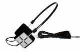 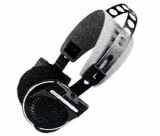 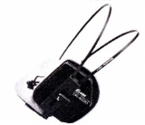
�V.２ウェイ型
エレガは1960年代に当時人気のあったコスの大口径機（8�p級）に対して、それでは大口径すぎるのではとの結論を出す。そして特性追求の方法として２ウェイ型にも着手した。そして型番100〜200番台の時代、継続して２ウェイ型を作り続けていた。通常のものは型番の末尾が「CH」、ボリュウム・トーンコトロール付きが「HRT」。
なおそのころシングルドライバーを含めて検討し、エレガが出した結論は、4�pぐらいの口径でハイファイ再生は可能だそうだ。ソニーのロングセラー・モニター機MDR-CD900STやダイナミック型の最高峰とする意見があるULTRASONEのEditionシリーズの口径が4�p、当のコスの主力も5�pドーム型に移ったことを考えると適格な判断だったと思う。
DR-100CH DR-119CH DR-164HRT DR-165HRT
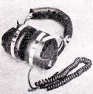
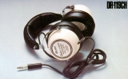
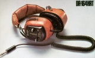
(左 DR-100CH 中央DR-119CH 右 DR-164HRT)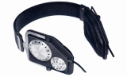
(DR-232CH)
�W.折りたたみ型（Pocher＝「ポシェ」シリーズ）
藤木電器時代の最後の製品群は、ソニーが作り出したスポンジイヤパッドの超小型・軽量タイプだった。型番の数字も1桁と他社にあわせていたが、Pocher-6の広告写真の中には「DR-288C」の型番が振られたものがあり、他のモデルも正式には、伝統の「DR」の型番を持っていたのかもしれない。なおPocher＝「ポシェ」の末期の販売はオーラートンなどの代理店であった�潟gーマスが行っていた。
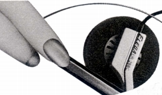
（広告でのPocher-6のカット、DR-288Cの型番が見える。他にPocher-8がDR-286Cらしい。）
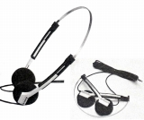
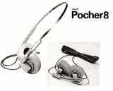
(左 Pocher-6 右 Pocher-8)
�X.その他の特殊な機種
多くの会社のOEM製品を請け負い（デザインの異なるものだけで300点以上）、また自身も1970年台中盤まで業界をリードしてきたエレガには、特殊なヘッドフォンも多かった。
DR-102CAはアナログディスクプレイヤーを直結できる製品だったらしい。DR-67CやDR-182Cは「婦人用」とされるヘッドフォンで、バンドを下側にした形態で、テクニカのATH-Uシリーズの前身ともいえる製品だった。70年代前半流行した4chステレオ対応機も4機種(*)あった。
DR-67C DR-67C�V DR-102CA DR-162C DR-182C
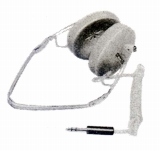 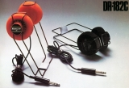 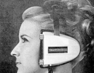
（4ch機） DR-129Q DR-147Q DR-151Q DR-163Q DR-174Q
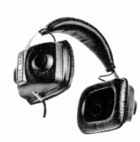 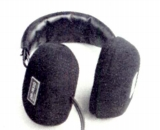 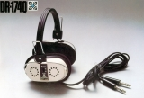
コンデンサー型は純コンデンサー型(CR-1070C)とエレクトレット・コンデンサー型(CR-2072C、2074C)が存在する。純コンデンサー型用アダプターには通常のACバイアスのもの以外にも、セルフバイアスやバッテリーバイアスものも企画されたようだ。エレクトレット・コンデンサー型はバックエレクトレットタイプだったようだ。
（コンデンサー型） CR-1070C CR-2072C CR-2074C
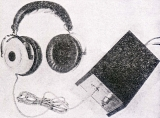 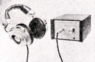 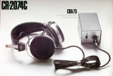
動電全面駆動型は自社製品としては短命に終わったが、OEM供給用のベース機だったのであろうか？
（動電全面駆動型） FR-901C FR-902C FR-907C
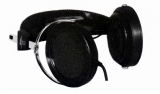
�Y.その後
現時点までに入手した資料からみて、1985年前後に民生用の販売は終了したようだ。Stereo
Sound YEAR BOOK(HifFi STEREO GUIDE)
の1984年版では18機種が掲載されているが、1985-86年版では掲載はゼロである。Pocherシリーズを最後に、オーディオ誌でも広告掲載がなくなり、また少数の例外を除き、エレガ製を思わせる他社のヘッドフォンもなくなった。
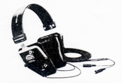
しかし放送等の現場では根強く使い続けられていたのだろう。やがて1990年代半ばになると、再びエレガブランドのヘッドフォンが登場するようになった。1995年3月の「無線と実験」誌にDR-592C2が登場している。エレガアコスが製造とは書かれてはいないが、取扱は現在もエレガを扱っているエーブイシーであった。
なおネットでの間接的な情報では、エレガアコスは1985年に、エレガの役員だった方が設備等を引き継いで設立したという。旧エレガの販売終了時期とも一応合致する。
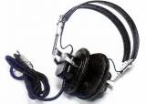